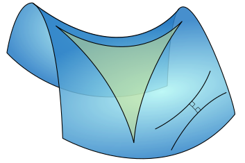

Welcome to J's studying page
Differential Geometry is a mathematical discipline that uses the techniques of differential calculus, integral calculus, linear algebra and multilinear algebra to study problems in geometry. The theory of plane and space curves and surfaces in the three-dimensional Euclidean space formed the basis for development of differential geometry during the 18th century and the 19th century.
Since the late 19th century, differential geometry has grown into a field concerned more generally with the geometric structures on differentiable manifolds. Differential geometry is closely related to differential topology and the geometric aspects of the theory of differential equations. The differential geometry of surfaces captures many of the key ideas and techniques endemic to this field.
